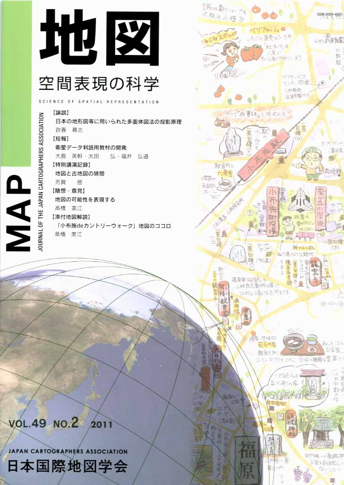
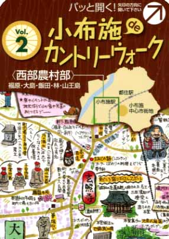

≪No.49 No.2 添付地図≫

本図を許可なく複製・利用することを禁止します。
| 最 新 号 | バックナンバー | 添付地図目録 | 投 稿 規 程 |
Vol.49 No.２ （通巻１９４号） ２０１１年
| 【論説】 | 日本の地形図等に用いられた多面体図法の投影原理 | 政春尋志 |
| キーワード：多面体図法、地形図、陸地測量部、地図投影、旧版地図 | ||
| 【短報】 | 衛星データ判読用教材の開発 | 大島英幹・太田 弘・福井弘道 |
| キーワード：地理教育、衛星データ、GIS、判読 | ||
| 【特別講演記録】 | 地図と古地図の狭間 | 芳賀 啓 |
| キーワード：地図、古地図、地図の原理、認識構造、複製地図、出版、紙地図、デジタル地図、場所の記憶 | ||
| 【書評・紹介】 | Ａ）西国三十三所道中案内地図 【上】【下】 Ｂ）西国三十三所道中の今と昔 【上】【下】 | 栗田好明 |
| 【随想・意見】 | 地図の可能性を表現する | 高橋美江 |
| キーワード：情報、表現、効果、遊、可能性、絵地図、散歩屋 | ||
| 【添付地図解説】 | 「小布施deカントリーウォーク」地図のココロ | 高橋美江 |
| キーワード：農村部、フィールドワーク、情報、機能、ミウラ折り、小布施町、絵地図 | ||
| 【ニュース】 | 「歴史の風景・眺めてみれば−鳥瞰図の世界−」展 | 下津間康夫 |
| 【特別会員名簿】 | ||
| 【リレーメッセージ：地図・地図学への思い】 | 海の地図作成の仕事に携わって | 跡部 治 |
| 【学会記事】 | ||
| 【添付地図】 | 小布施deカントリーウォーク | |
|
≪No.49 No.2 表紙≫ |
|
|  |
|
|
|
≪No.49 No.2 添付地図≫ |
| 
本図を許可なく複製・利用することを禁止します。
|